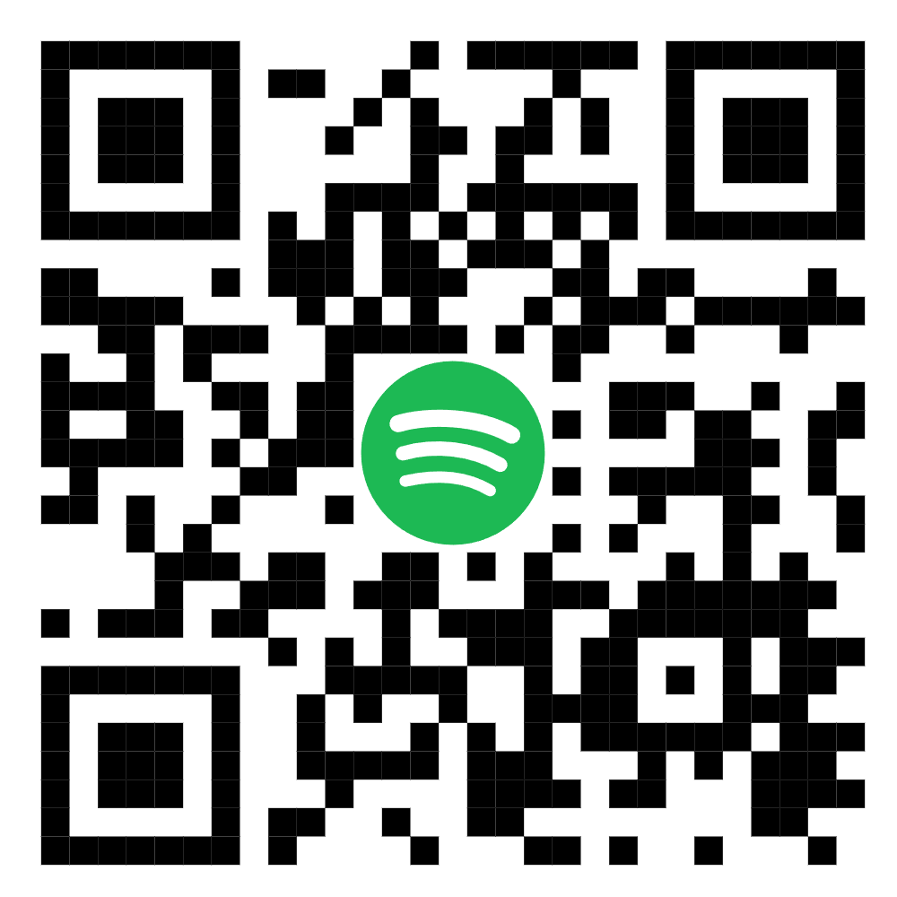

Hola Sofi, primero que nada espero que hayas estado muy bien este tiempo, que hayas disfrutado del viaje con tu familia y que hayas tenido una buena semana de inducción en tu universidad. A pesar de todo, hoy quiero celebrar 6 meses desde aquel día que fui a tu casa, con unos chocolates, globos, pétalos, un oso, un ramo de tulipanes y una carta. Haber luchado por esta relación medio año, merece ser reconocido, y por eso te escribo esta carta y te preparé las sorpresas que tenía planeadas para darte el día de hoy, a pesar de la situación. Me esforcé haciendo todo durante 2 semanas, entonces espero que te guste.
No saber del otro todo este tiempo seguramente fue muy difícil para los dos, pero tenías razón, darnos un tiempo era necesario; para valorar estar junto al otro, para sanar heridas pasadas sin dar lugar a heridas nuevas, pero sobretodo para difuminar el apego ansioso al otro, que buscaba control a través de la toxicidad, y, en cambio, ver el amor verdadero que tenemos hacia el otro, ese es mi punto de vista. Nunca nos dimos un tiempo formal, siempre fue forzado por nuestro ego o por la situación, y no pasaban más de dos días sin que nos habláramos de nuevo, aunque fuera a escondidas por chat, fue un error no hacerte caso las veces que me pediste un tiempo, era necesario para disminuir el apego y la ansiedad, perdón, créeme que después de desapegarse, cuando surgen pequeños problemas, se quedan pequeños, y los pequeños momentos bonitos, se vuelven gigantes.
Sé que los dos hemos prometido muchas cosas que al final no se cumplieron y eso empeoró la desconfianza que de por sí ya teníamos desde el inicio por el pasado de cada uno. Pero quiero que esta vez sea diferente, que sea una promesa de corazón a corazón que se cumpla, para que podamos volver a confiar en el otro. Por eso es que te pedí volver a empezar desde cero, decidí entrar a un centro especial de psicología en donde tendré consultas todas las semanas, y me gustaría hablar con tu mamá, dejar las palabras de lado y empezar a demostrar, quiero que hagamos un compromiso real, pero para eso, primero debo saber si tú quieres lo mismo.
Por eso, primero quisiera que hablemos solo los dos en persona de manera madura de absolutamente todo de nuestro pasado, de lo que ha pasado recientemente y de nuestro futuro. Si llegamos a un acuerdo, como te lo prometí, te daré un regalo que iba a ser para celebrar nuestros 6 meses juntos, pero me gustaría que lo tomáramos como un regalo que marque un nuevo inicio desde cero, y en el futuro me gustaría volverte a pedir que seas mi novia; una relación nueva, pero con la misma persona. Y si no llegamos a un acuerdo, quisiera despedirme de ti para siempre, sin dejar puertas abiertas, dejando todo claro y sabiendo que luchamos por el otro hasta el último momento. En ambos cosos el contador volverá a cero, solo que en uno se reiniciará y en el otro se detendrá para siempre.
Por mi parte, yo aún te amo igual, aún quiero cumplir todos nuestros sueños, metas y promesas, como estar juntos durante la universidad, viajar, vivir juntos, casarnos, tener hijos, aún quiero tatuarme tu nombre cuando cumpla 18 años. Realmente quiero que seas tú y no me voy a rendir jamás, siempre te daré todo de mí, todo tiene solución en la vida, excepto la muerte, y eso es lo único que quiero que nos separe, cuando ya estemos en nuestras últimas. Si tú ya no quieres lo mismo y prefieres rendirte, lo aceptaré, pero pase lo que pase, eres el amor de mi vida y siempre recordaré todo lo que viví contigo y ojalá siga viviendo como lo mejor que me pasó en la vida; como nuestro primer beso en la sala 1 del cine (igual que el número del día de nuestros mesarios) y cada beso, nuestro primer abrazo en el colegio y cada abrazo, cada momento íntimo que prefiero no detallar para no quitarle lo tierno a mis palabras, cada palabra bonita, los momentos difíciles que siempre logramos superar aunque pareciera imposible, cada charla para conocernos más, cada charla para solucionar un conflicto, cada tarea del colegio que hicimos juntos, las veces que dormimos juntos, el viaje a Makute, tu cumpleaños, mi cumpleaños, cuando me dijiste que me elegías a mí, cuando te pedí que fueras mi novia, las veces que fuimos a La Sabana… y en general, todo lo bueno y lo malo y las cosas pequeñas y grandes que han hecho parte nuestra relación. Gracias por todo eso, gracias por hacer parte de mi vida y gracias por ser tú. No necesito ni quiero a nadie más que no seas tú. Perdón por todo lo malo, esta es mi última esperanza, cuando algo toca fondo, solo puede ir hacia arriba y creo que esta es la manera de darle un fuerte impulso a nuestra relación para salir de la oscuridad, las cosas no se arreglan de la noche a la mañana, por eso este tiempo fue un gran paso, hoy doy el siguiente paso para seguir mejorando poco a poco cada día, pero esta vez junto a ti, sé que es posible y la verdad lo daría todo para estar contigo por el resto de mi vida. Te extraño… No te quiero perder.
Te amo ADMV,
David

Escanéame cuando me extrañes 🎵